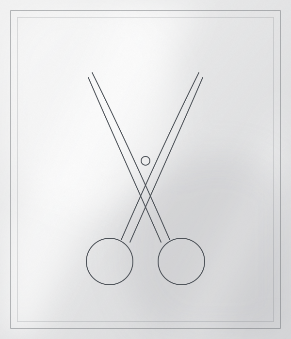
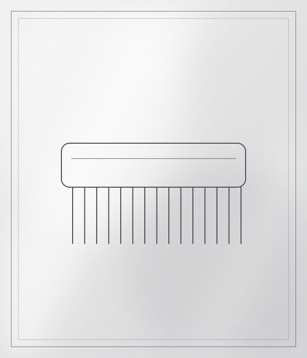
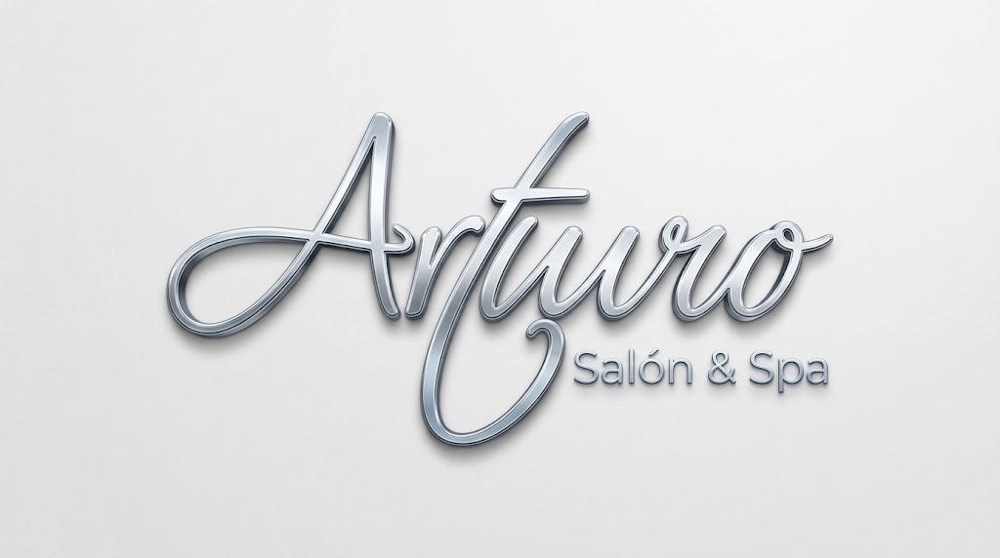
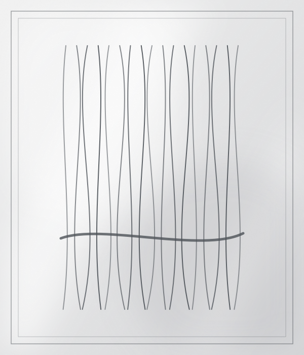
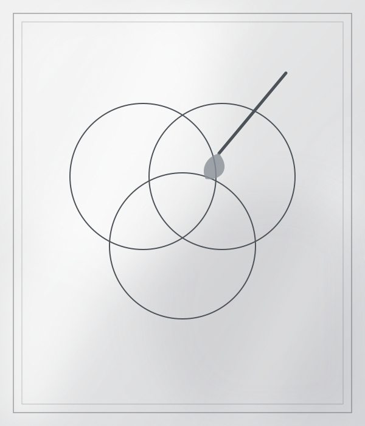
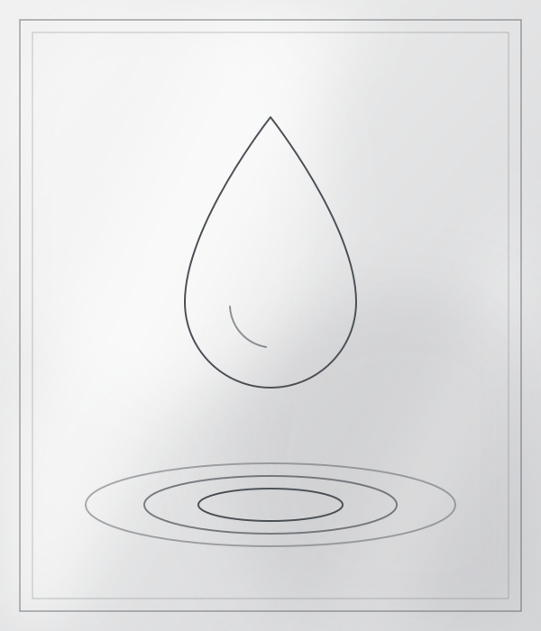
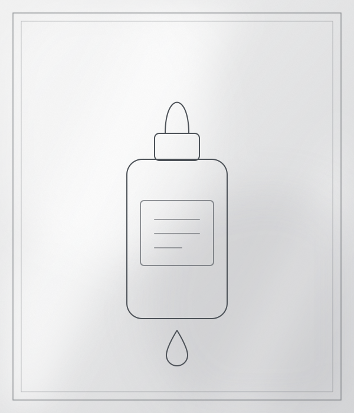

Cortes precisos, a tu estilo.

Salón de Belleza Arturo es un salón en San Miguel, con 4.6 de puntaje y 151 reseñas en Google. Ofrece cabello y tinte. Reserva tu cita y ven a conocernos.
Calificación basada en 151 reseñas de clientes en Google Maps.
Agenda tu cita por WhatsApp en pocos minutos.
Contisuyo 295. Fácil de encontrar.


Cortes precisos, a tu estilo.


Color, mechas y degradados a tu medida.


Color, mechas y degradados a tu medida.


Cuidado para devolver brillo y cuerpo.
Ilustraciones referenciales.
Envíanos un mensaje por WhatsApp.
Dinos el servicio que quieres y cuándo te viene mejor.
Te esperamos en Contisuyo 295, San Miguel.
Contisuyo 295, San Miguel, Lima.
Escríbenos por WhatsApp al +51 972 086 964.
Cabello y Tinte.
151 reseñas en Google Maps